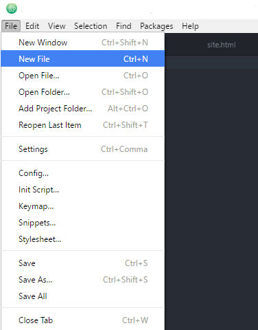
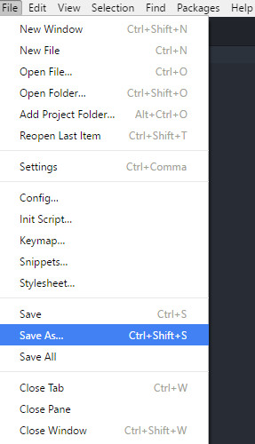
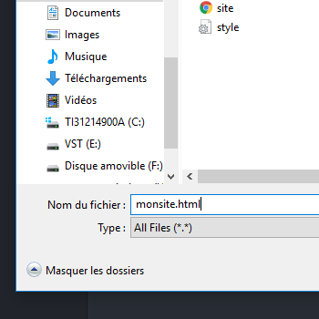
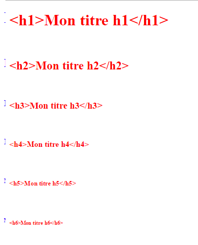
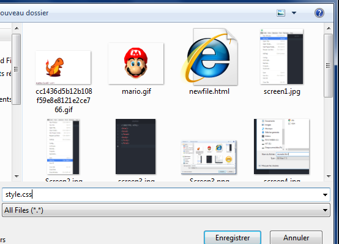
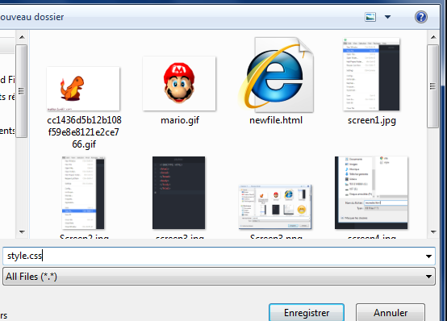
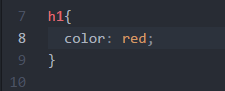
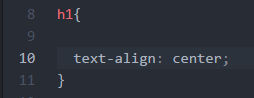

CREE TON PROPRE SITE INTERNET !
Introduction
Tu veux apprendre à créer ton propre site ? Tu es sur la bonne Page :) !
Sur notre site tu vas acquérir des bases solides pour pouvoir créer ta propre page internet et te la péter devant tes potes :D !
Pour ça il te faut au moins un matériel ! Mais lequel? Ton Ordinateur Bien-sûr ! :D
Pour bien commencer , muni toi de ton ordinateur et télécharge un éditeur de texte spécialisé pour la programmation , on te recommande un très bon logiciel gratuit qui s'appelle ATOM , pour te faciliter la tâche tu n'as qu'à cliquer sur le lien qui correspond à ton système d'exploitation :) !
ATOM pour Windows ATOM pour Linux ATOM pour MAC
C'est quoi L'HTML/CSS ?
L'HTML (de l'anglais "Hyper-Text Media Link") est le squelette c'est à dire la base d'une page internet , qui peux comprendre plusieurs type de média comme les textes,images,liens etc... enfin tu vois le genre !LOL
et le CSS(de l'anglais Cascading Style Sheet) est un outil qui sert à personnaliser l'HTML,afin qu'il soit plus agréable à regarder --> à rendre plus jolie quoi!:P
Les Bases de L'HTML
Rentrons dans le vif du sujet ! (enfin ! )
Comme nous l'avons dit plus haut L'HTML est le langage de base d'un site internet , pour être plus précis c'est un langage de "balisage".
Un langage de balisage est un langage facile qui consiste à ouvrir et fermer des balises , afin de mieux se repérer dans notre code
La structure de l'Html
Nous allons voir comment structurer le squelette de base de l'html.
Tout dabord ouvrons le logiciel ATOM .
Dans ATOM :
Etape 1 : Crée un nouveau fichier

Etape 2 : Sauvegarder le fichier en ".html"
 
(je te conseilles de créer un dossier dans lequel tu placera tous les fichiers en lien avec ton site internet pour facilité ton organisation)
Etape 3 : Le squelette de base
Pour commencer nous allons créer nos balises dans notre fichier html .
Tout fichier de type HTML commence par un "<!DOCTYPE html>" et ensuite nous ouvrons et fermons les balises html comme ceci : <html>et </html>
ces balises vont dire à l'ordinateur qu'il s'agit d'un document avec pour vocabulaire le langage HTML.
à noter que les balises html ,englobe tout le code , et chaque balise s'ouvre et se ferme de cette même manière : "<balise> </balise>"
Il est aussi nécessaire de passer à la ligne après l'ouverture d'une balise , celà permettra une meilleur vision de ton code
-La structure de l'HTML est composé de 2 parties distinctes :
la partie "head" c-à-d la tête de l'html, sert à relier les autres fichiers nécessaire au bon fonctionnement de notre page comme le fichier .css (mais on verra celà après :3 )
Ouvrons maintenant nos balises head comme ceci : "<head> <head>"
-L'autre partie de l'HTML est le "body" c-à-d le corps de l'HTML,c'est là dedans qu'on peux créer des titres , des paragraphes , insérer des images , vidéos etc etc ..
Toujours de la même manière ouvrons et fermont les balises body !
Ton code de base devrait doit ressembler à ça :
Ponctuation dans les textes
Pour avoir des accents des symboles dans notre texte il faut impérativement mettre la balise <meta charset=utf-8> dans notre balise <head>
Comme ceci : <head><meta charset=utf-8></head>
Les Balises HTML Principales
Nous allons maintenant voir les balises les plus courantes en HTML .
Les Titres
Les titres dit "heading" en anglais ont plusieurs taille partant du plus important(plus grand ) c-à-d <h1> , au moins important (plus petit) >h6< .
Exemple :
les paragraphes :
Les paragraphes se forme de cette manière : <p> </p>
Exemple :
Mon paragraphe c'est ce que t'es en train de lire .
Je viens de passer à la ligne prépare toi à apprendre une nouvelle balise !
Pour sauter une ligne il faut utiliser la balise " <br>" , c'est une balise qui n'a pas besoin d'être fermer ( c'est toujours ça de pris ! )
Style d'écriture
Tu voudrais un peu de style dans tes textes? Italique, Gras...
Des balises existent pour ça:
Pour mettre un texte en gras il te suffit d'utiliser les balises <strong>
Pour mettre un texte en italique il te suffit d'utiliser les balises <em>
Les liens :
Exemple: Clique su mon lien té !
Pour écrire ce lien rien de compliqué il suffit d'utiliser la balise " a href= " comme ici :
<a href="http//:www.monlien.re">
Les images :
Notre page est un peu triste tu trouves pas ?
Pour insérer une image il suffit d'utiliser la balise "img src" comme ici :
<img src="monimage.jpg">

Les BASES DU CSS !
Nous avons tous nos éléments dans notre page HTML, nous pouvons encore l'embellir.
Pour cela nous allons donc utiliser du CSS.
Tout d'abord il faudra donc créer une page css. Nous allons procéder de la même façon que la page html.
Etape 1:créer un nouveau fichier
Etape 2:sauvegarder le fichier en".css"
 

Etape 3: lier notre page css à celle de l'HTML
Après avoir créé notre page CSS nous devons lier cette dernière à notre page html.
Pour cela nous devons retourner en haut de notre page html, entre nos balises head et entrer ceci:
<link rel=stylesheet href="style.css">
Super!Nous pouvons à présent commencer à utiliser notre page CSS,
Ouvrons donc notre page css
Tu veux modifier la taille de ta police, ou même la couleur, le CSS est là!!! Rien de plus simple: Si tu veux changer la taille de tes titres (h1,h2...), il te suffit d'écrire comme ceci:

Et pour la couleur:
Comme tu peux le voir, il suffit d'écrire ce que tu veux changer, dans l'exemple le titre h1, d'ouvrir les accolades, et de changer la taille, la couleur et bien d'autres.
Tu veux centrer ton texte? Rien de plus simple:
De même pour aligner à gauche ou à droite, il suffit juste de changer "center" par "left" ou "right".
Tu voudrais mettre une image de fond? Pour cela tu utiliseras tout simplement le background-image! Simple non?